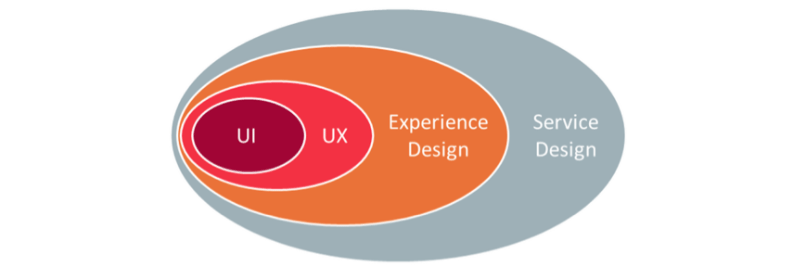

FRONTEND DEVELOPER (TAMBIÉN LLAMADO UI DEVELOPER)
Este especialista está encargado de implementar la capa visible de la interfaz, su presentación. Pero lo hace trabajando directamente con HTML, CSS, Javascript, PHP.
Comencemos vinculando este módulo con situaciones reales: Al escribir “web” en el buscador de LinkedIn —una comunidad social orientada a las empresas, a los negocios y el empleo— se obtienen 15 sugerencias, que se pueden agrupar de la siguiente manera:
|
|
|
|
Luego, en los resultados de “web”, las principales búsquedas de trabajos relacionados son:
En los resultados de “web developer”, las principales búsquedas de trabajos relacionados son:
Y en los resultados de “front end developer”, las principales búsquedas de trabajos relacionados son:
Ahora podemos examinar los términos recurrentes, para tener en vista las situaciones reales actuales:
Cuando hablamos de desarrollar un proyecto "web" profesional, tenemos que establecer si se trata de un sitio web estático, un sitio web dinámico o una aplicación web:
Este especialista está encargado de implementar la capa visible de la interfaz, su presentación. Pero lo hace trabajando directamente con HTML, CSS, Javascript, PHP.
Este especialista está encargado de determinar cómo se debe presentar cada página en una aplicación o sitio web; por medio de wireframes y mockups, el Diseñador UI le entrega su trabajo al Frontend para que lo implemente.
Es el profesional encargado de cada aspecto de la interacción de un usuario con un servicio o producto digital, cuidando lo que en total hace a la interfaz y su percepción. La UX está directamente emparentada con la usabilidad, la que se encarga de cuidar la ergonomía en interfaces digitales. La tendencia actual es cambiar este término por UX. Así, por ejemplo, la UPA (Usability Professionals’ Association) fundada en 1991, desde 2012 se llama UXPA (User Experience Professionals Association).
Pueden relacionar el trabajo de UX - UI - Frontend con una línea que va de lo abstracto a lo concreto. El trabajo del UX podría ser el más abstracto e integral, mientras que el frontend es el más concreto y detallista.
De hecho, cuando se habla de diseño, se suele excluir al frontend de los esquemas:
Pero, a todo diseñador le pueden ser útiles algunos conocimientos básicos de Frontend. Así podría:
Considerando esta utilidad, es que el módulo se enfoca en Frontend con una introducción al nivel de quien confiesa: "yo no se nada de web".
Para poder avanzar a niveles que les permitan aplicar y analizar procesos de producción en web, se recomiendan los cursos:
Y si quieren avanzar aún más, hasta evaluar y crear, se les recomienda un Certificado Académico Interdisciplinario:
Hablar de WEB es hablar de un sistema de distribución de documentos de hipertexto que se gestó entre marzo de 1989 y diciembre de 1990, gracias al trabajo de Tim Berners-Lee en el CERN (Organización Europea para la Investigación Nuclear; en Ginebra). Este sistema fue presentado públicamente el 30 de abril de 1993.
Hace más de 25 años, Tim Berners-Lee inventó la Web. Pero no inventó Internet, eso lo hizo gente como Vint Cerf.
Para navegar en WEB, necesitamos de un software que visualice la estructura, y contenido de los documentos de hipertexto: Un Navegador Web.
Podríamos decir que en 1996 la Web ya se aseguraba la notoriedad mundial, la computación personal comenzaba a bajar sus costos, e Internet se democratizaba con conexiones de línea conmutada, avanzando hacia banda ancha fija, WiFi, Banda Ancha Móvil, etc.
20 años después, podemos usar nuestro Navegador Web favorito, escribir en la barra de direcciones algo, y listo: aparece lo que necesitábamos:
http://www.loquequierasver.com/Y esto lo puedes hacer con distintos dispositivos, sea tu smartphone, tablet, laptop o desktop.
Ahora hagamos el ejercicio de escribir algo en la barra de direcciones de nuestro navegador web, asegurándonos de que el dispositivo esté conectado a Internet:
http://www.google.clDetrás de ese nombre hay una traducción: de una dirección IP (Internet Protocol) a un nombre de dominio, según la base de datos distribuida de Internet conocida como DNS (Domain Name System), asociada a NIC (Network Information Center).
Esta traducción es necesaria para contactar con el servidor web que corresponda, para la petición que corresponda.
216.58.210.163En esa dirección IP, traducida a un nombre de dominio, encontraremos un recurso. Por esto es que en la barra de direcciones del Navegador Web nos acostumbramos a ingresar una URL (Localizador de Recurso Uniforme) o URI (Identificador de Recursos Uniforme)
Pero, lo que habitualmente hacemos en el Navegador Web es:
Las correcciones que se hagan en la barra de direcciones del Navegador Web nos están diciendo: ¡Lo que es obvio, se omite!
De una manera perecida, pueden encontrar recursos en sus propios computadores. Por ejemplo, yo tengo la imagen de un "tierno gatito" en el escritorio de mi computador:
file:///Users/FACO/Desktop/gatito.jpgPor favor escriban esa dirección en sus propios Navegadores Web. No pasará nada. La diferencia la hace el Servidor Web: Un programa informático siempre dispuesto a establecer conexiones para realizar transacciones.
El término también se emplea para referirse al ordenador que ejecuta este programa, y además almacena los recursos necesarios para completar cada transacción.
Ahora entenderán por qué deben considerar, al menos, el pago de dominio y servidor cada vez que hagan un sitio web. Por ejemplo:
Dominio: Se paga a NIC Chile por tener un http://www.uc.cl
Servidor: Se paga a HostGator por almacenar y administrar todos los recursos del sitio web de Diseño, recursos localizados en http://diseno.uc.cl
Por todo esto:
Hoy podemos escribir en la barra de direcciones de un Navegador Web lo siguiente:
http://diseno.uc.cl:80/index.phpEsto es pedirle al Navegador Web comunicarse con un Servidor Web siguiendo cierto protocolo (HTTP); hacia el Servidor va una solicitud, y desde el servidor vienen códigos, incorporando imágenes y otros recursos, para ser interpretados o renderizados por el Navegador.
Pero los recursos no aparecen en el Servidor Web por generación espontánea. Fue necesario ponerlos allí en algún momento. Para hacerlo se utilizó otro protocolo (FTP) y algún Cliente FTP, un primo lejano de un Navegador Web.
Para mayor información respecto a lo ya tratado, se recomienda visitar:
Cada elemento de HTML se escribe, generalmente, entre etiquetas:
<etiqueta>contenido</etiqueta>Cada elementos HTML es un sandwich, con las etiquetas como rebanadas de pan, y el contido es su relleno. Hasta el más humilde de los sandwich, no puede serlo sin las etiquetas de pan y el contenido de mantequilla. Aunque también hay elementos HTML que nos obligan a cambiar la analogía del sandwich por canapé:
<hr>, <br>, <img>, <meta> Con cada elemento definimos qué se ve en una página web.
Cada elemento, en su etiqueta de inicio, puede estar determinado por uno o varios atributos; cada atributo tiene su variable.
<etiqueta atributo="variable">contenido</etiqueta>Deben notar que atributos y variables se escriben solo en la primera etiqueta, la de apertura, nunca en la de cierre.
Mediante atributos y variables pueden cambiar un simple párrafo:
<p>esto es un párrafo</p>Este elemento puede seguir teniendo el mismo contenido, pero podría tener las características de una clase "alumna" y ser único por una identidad "mariana".
<p class="alumna" id="mariana">esto es un párrafo</p>Atributos y variables también nos permiten establecer vínculos, relaciones y recursos. Así, por ejemplo, puedo establecer un recurso de imagen que se llama "selfie", que tiene extensión "jpg", y se guarda en la carpeta "images", al mismo nivel que el documento HTML. Además puedo indicar que tenga una clase "destacada":
<img src="images/selfie.jpg" class="destacada">
<!--eso fue un canapé, y esto es un comentario-->Cada regla de CSS se escribe, generalmente, así:
selector{propiedad:valor;}Con cada regla definimos cómo deberían verse los elementos en el HTML. Esta definición exige una conexión entre el HTML y el CSS. Esta conexión se hace:
Veamos primero la conexión a nivel de cada regla, considerando el caso de los elementos:
body{
color:white;
background:black;
font-family:Helvetica, Arial, sans-serif;
font-size:1em;
}Sigamos con la conexión a nivel de cada regla, considerando ahora las partes de un elemento (pseudoelemento):
p::first-line{
text-transform: uppercase;
}Sigamos con la conexión a nivel de cada regla, considerando ahora un estado espacial del elemento (pseudoclase):
a:hover{
text-decoration: underline;
}Otra más de conexión a nivel de cada regla, con una clase (class):
.destacada{
border:5px solid rgba(255,255,255,1);
}Y la última conexión a nivel de cada regla, con una identidad (id):
#mariana{
color:rgba(255,200,200,1);
}Ahora, para cerrar, veamos la conexión a nivel de conjunto de reglas CSS.
Bien puedes agregar un poco entre las líneas de código en el cuerpo (body) del HTML, usando atributos y variables:
<p style="color:red;">esto es un párrafo</p>Mejor sería hacerlo una vez para todo el documento dentro de la cabeza (head) del documento HTML:
<style>
body{
color:white;
background:black;
font-family:Helvetica, Arial, sans-serif;
font-size:1em;
}
#mariana{
color:rgba(255,200,200,1);
}
/* Este es un comentario en CSS */
</style>
Pero lo más efectivo sería trabajar en un documento CSS independiente, que se vincule con uno o varios documentos HTML
<link rel="stylesheet" href="css/estilo.css" type="text/css">Este documento, que ha servido para presentarles los contenidos de la clase, es un documento HTML, cuyo estilo está definido mediante un documento CSS.